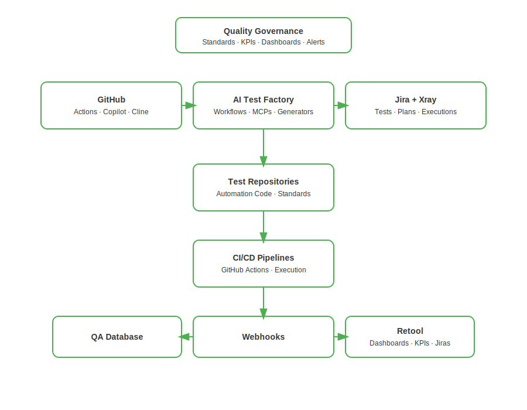

QA Lead | Quality Architect | Innovating Test Automation & Observability
Arquitectura
Todos los sistemas están conectados mediante GitHub Actions, webhooks y APIs, formando una única fuente de verdad para la calidad.

Proyectos
AI Test Factory
Plataforma de generación de Tests y Jira impulsada por IA
Este repositorio contiene un sistema basado en IA que transforma la creación de tests de una tarea manual en un flujo automatizado, gobernado y totalmente trazable.
GitHub Copilot
Cline
MCPs personalizados
APIs de Jira y Xray
GitHub Actions
Para crear código de test, issues de Jira y artefactos de Xray estandarizados en minutos en lugar de horas.
Ver repositorio
(la versión en español está disponible en README_ES.md)
AI Test Factory
AI-driven Test & Jira Generation Platform
This repository contains an AI-powered system that turns test creation from a manual activity into an automated, governed and traceable workflow.
GitHub Copilot
Cline
Custom MCPs
Jira & Xray APIs
GitHub Actions
To create standardized test code, Jira issues and Xray artifacts in minutes instead of hours.
Plataforma de monitorización y control de QA con Retool
Panel que recoge la información de ejecuciones automáticas mediante webhooks y APIs, mostrando KPIs, resultados de tests, incidencias y evolución de cada test.